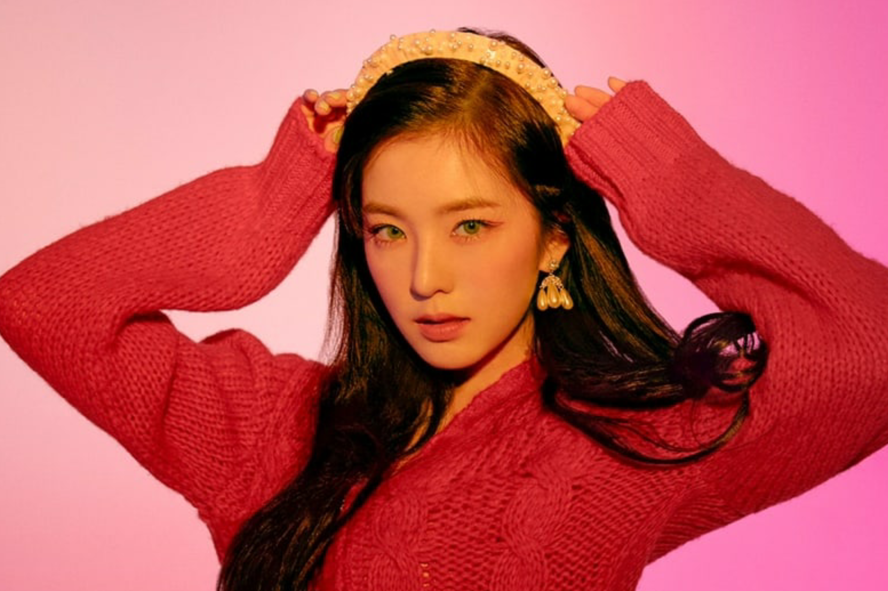
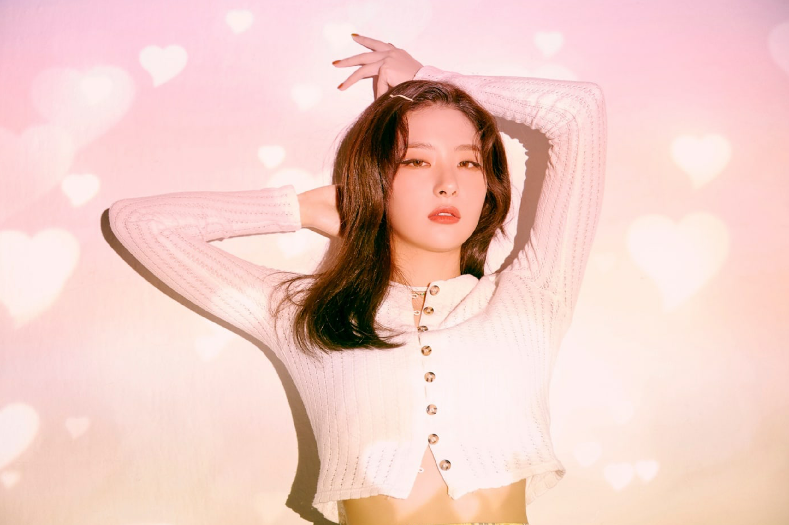
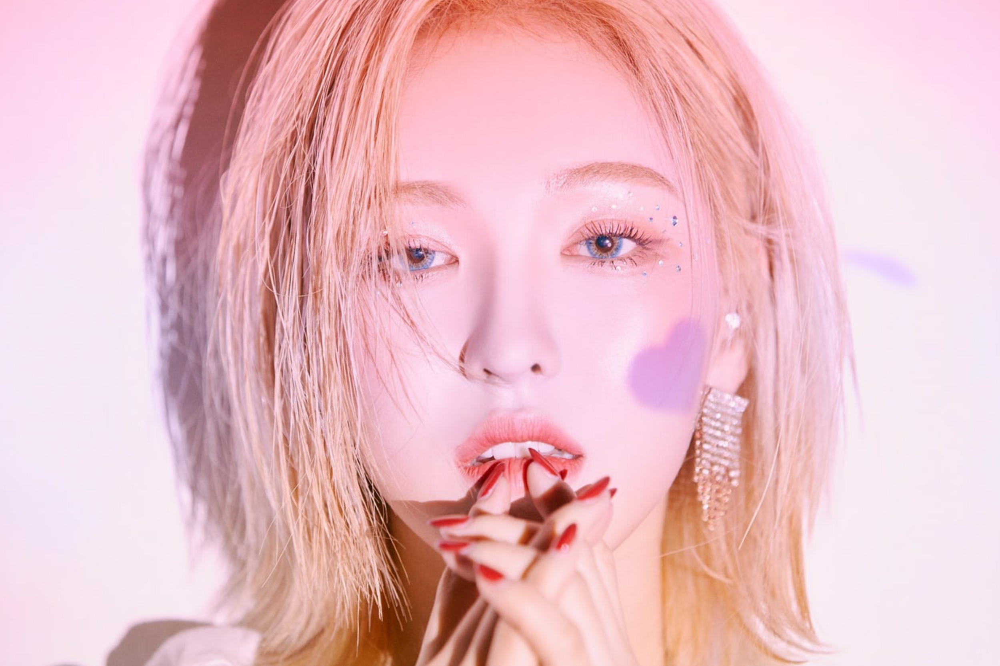
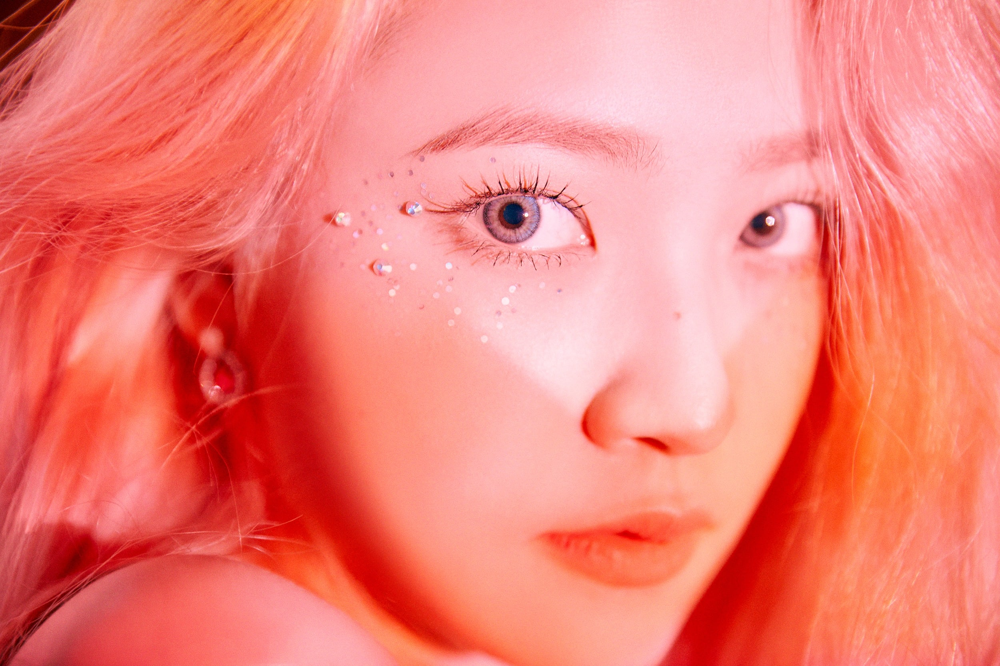

<!DOCTYPE html>

<html class="myFontClass">

</html>

  <head>
    <body style="background-color:#FFF5E9;">
    </body>
    <meta charset="utf-8">
    <meta name="viewport" content="width=device-width">
    <title>repl.it</title>
    <link href="style.css" rel="stylesheet" type="text/css" />
    <style>

       .column {
        float: left;
        width: 45%;
        margin-top: 6px;
        padding: 20px;
        line-height: 1.8;
        }

        .row:after {
        content: "";
        display: table;
        clear: both;
        text-align: center;
        }

      @media screen and (max-width: 600px) {
      .column {
          width: 88%;
          margin-top: 0;
      }
    }
      </style>
  </head>

  <body>
    <script src="script.js"></script>
    <!-- header --> 
    <div class="header" id="myHeader">
        
        </div>
      
    <section class= "containera">
      <div class="row">
        <div class="column">
            
        </div>
        <div class="column">
            <h2><b>Red Velvet</b></h2>
            <p></p>
            <p>Red Velvet (Hangul: 레드벨벳) is a South Korean girl group formed and managed by SM Entertainment. They debuted on August 1, 2014 with the digital single "Happiness" with the four-member line-up of Irene, Seulgi, Wendy and Joy. Yeri joined the group in March 2015, following their first major release, Ice Cream Cake. Musically, Red Velvet employs a unique dual sonic concept that reflects their own group name: their predominantly-pop "red" side experiments occasionally with electronic, funk and hip hop, while their "velvet" side focuses on '90s-influenced R&B with elements of ballad and jazz.
              
        </div>
      </div>
    </section>


    <section class= "containera">
      <div class="row">
        <div class="column">
            
        </div>
        <div class="column">
            <h2><b>Irene</b></h2>
            <p id = "information">Stage Name: Irene (아이린)<br>
              Birth Name: Bae Ju Hyun (배주현)<br>
              Position: Leader, Main Rapper, Lead Dancer, Sub Vocalist, Visual, Center<br>
              Birthday: March 29, 1991<br>
              Zodiac Sign: Aries<br>
              Height: 160 cm (5’3″) (Official) / 158 cm (5’2″) <br>
              Weight: 44 kg (99 lbs)<br>
              Blood Type: A<br>
              MBTI Type: ENTJ<br>
              Sub-Unit: IRENE & SEULGI</p>
        </div>
      </div>

      <div class="row">
        <div class="column">
            
        </div>
        <div class="column">
            <h2><b>Seulgi</b></h2>
            <p></p>
            <p id = "information">Stage Name: Seulgi (슬기)<br>
              Birth Name: Kang Seul Gi (강슬기)<br>
              Position: Main Dancer, Lead Vocalist<br>
              Birthday: February 10, 1994<br>
              Zodiac Sign: Aquarius<br>
              Height: 164 cm (5’5″) (Official) / 161 cm (5’3″)<br>
              Weight: 44 kg (97 lbs)<br>
              Blood Type: A<br>
              MBTI Type: ISFP<br>
              Sub-Unit: IRENE & SEULGI</p>
        </div>
      </div>
      
      <div class="row">
        <div class="column">
            
        </div>
        <div class="column">
            <h2><b>Wendy</b></h2>
            <p></p>
            <p id = "information">Stage Name: Wendy (웬디)<br>
              English Name: Wendy Son (웬디손)<br>
              Korean Name: Son Seung Wan (손승완)<br>
              Position: Main Vocalist<br>
              Birthday: February 21, 1994<br>
              Zodiac Sign: Pisces<br>
              Height: 160 cm (5’3″) (Official) / 159 cm (5’2’’) <br>
              Weight: 47 kg (104 lbs)<br>
              Blood Type: O<br>
              MBTI Type: –</p>
        </div>
      </div>
      
      <div class="row">
        <div class="column">
            
        </div>
        <div class="column">
            <h2><b>Joy</b></h2>
            <p></p>
            <p id = "information">Stage Name: Joy (조이)<br>
              Birth Name: Park Soo Young (박수영)<br>
              Position: Lead Rapper, Sub Vocalist<br>
              Birthday: September 3, 1996<br>
              Zodiac Sign: Virgo<br>
              Height: 168 cm (5’6″) (Official) / 167 cm (5’6″) <br>
              Weight: 49 kg (108 lbs)<br>
              Blood Type: A<br>
              MBTI Type: INFP</p>
          </div>
      </div>

      <div class="row">
        <div class="column">
            
        </div>
        <div class="column">
            <h2><b>Yeri</b></h2>
            <p></p>
            <p id = "information">Stage Name: Yeri (예리)<br>
              Birth Name: Kim Ye Rim (김예림)<br>
              English Name: Katy<br>
              Position: Sub Vocalist, Sub Rapper, Maknae<br>
              Birthday: March 5, 1999<br>
              Zodiac Sign: Pisces<br>
              Height: 160 cm (5’3″) (Official) / 157 cm (5’1″)<br>
              Weight: 49 kg (108 lbs)<br>
              Blood Type: O<br>
              MBTI Type: INFP</p>
        </div>
      </div>
    </section>

    <div class="backButton">
      <a href="index.html" class="button">Back</a>
    </div>

   <!-- footer -->
   <div class="footer">
    <p>Footer</p>
  </div>
    


  </body>

</html>
